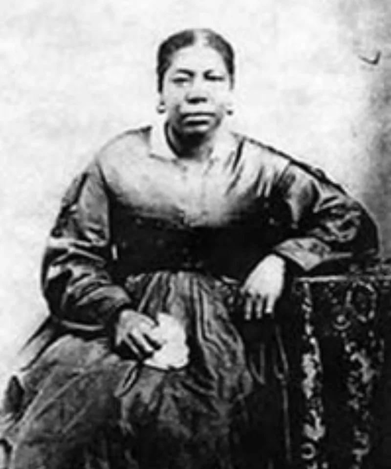

126 years of barring Black members, 1852–1978
AdmittedTheir own church publications admit these facts. You can make this point from LDS sources alone.
What the policy was
From Brigham Young's announcements in 1852 until June 1978, the church barred members of Black African descent. Men could not be ordained to the priesthood.
Men and women could not receive the temple endowment or be sealed. In the church's own teaching, those are the ordinances required for exaltation.
It lasted 126 years.
How it was defended at the time
A First Presidency statement in 1949 called it divinely instituted. It grounded the ban in conduct before this life, and in the curse of Cain.
What the church says now
The 2013 Gospel Topics essay Race and the Priesthood disavows "the theories advanced in the past." It places the ban's origin in the racial culture of 1850s America. And it says there was no founding revelation.
Their answer, at full strength
It leans on that essay, and it is honest work. Joseph Smith ordained Black men — Elijah Able and Q. Walker Lewis. The restriction began under Young, without a recorded revelation.
It was ended by revelation to Spencer W. Kimball in 1978.
Every theological justification has been repudiated. Apologists add a parallel from Acts: the gospel was withheld from Gentiles until Peter's vision.
God lifts restrictions on his own timetable, through living prophets. And a church willing to disavow its leaders' errors is showing revelation at work, not disproving it.
Where that runs out
The Acts parallel cuts the other way. Peter's revelation ended ethnic exclusion at the very start of the church.
Here the ban was brought in after an inclusive start. Prophets then defended it as doctrine for over a century.
And its reasons are now officially disavowed. Real people carried that for six generations.
The question about prophetic reliability is still there.
What to say
"Acts 10:34 says God is no respecter of persons. How do you hold that with 1852 to 1978?"


How they answer this — at its strongest
Nothing on record began it, a 1978 revelation ended it, and the old reasons are gone.
Their strongest case leans on the 2013 essay itself, and it is honest work.
Joseph Smith ordained Black men. Elijah Able and Q. Walker Lewis are the named cases. The restriction arose under Brigham Young, amid the racial culture of 1850s America, with no recorded founding revelation. It was ended by genuine revelation to Spencer W. Kimball in 1978. And the church has since repudiated every reason it once gave.
Apologists draw a parallel from Acts. The gospel was withheld from Gentiles until Peter's vision. God lifts restrictions on his own timetable, through living prophets. And a church able to disavow its leaders' errors is showing revelation at work, not disproving it.
The verdict
They admit this: the essay grants it all, and the question about prophets is left standing.
The history is fully documented, and the church's own essay concedes it. From 1852 to 1978 is 126 years. Six generations of real people carried it.
The Acts 10 parallel cuts against them. Peter's vision ended ethnic exclusion at the very start of the church. Here the ban came in after an open start. Prophets then defended it as doctrine for over a century. Its stated reasons are now disavowed.
That leaves the question about prophets standing.
Sources
- Gospel Topics Essay — Race and the Priesthood
- Official Declaration 2 (1978), primary text
- FAIR — Blacks and the priesthood